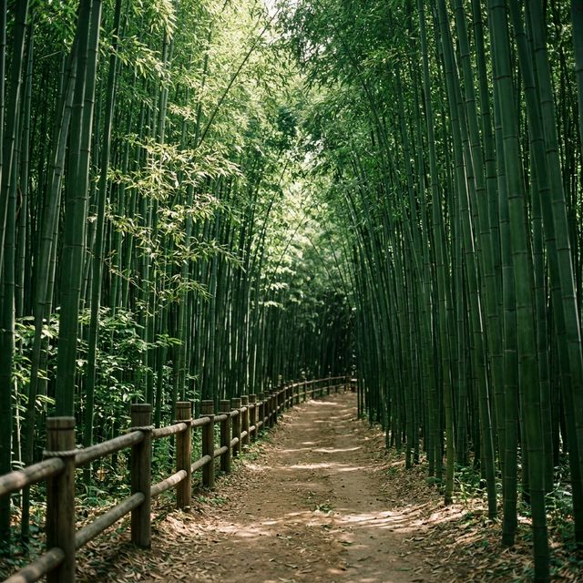
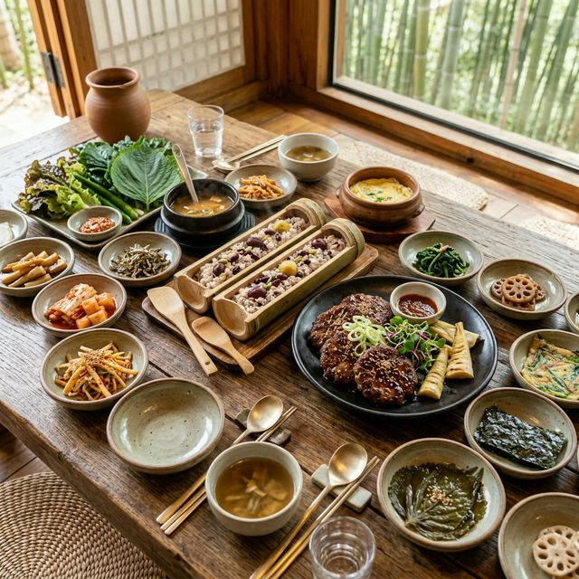

올해 축제는 2026년 5월 1일(금)부터 5월 5일(화)까지 5일간 열립니다. 어린이날까지 이어지는 황금연휴 기간이라 그 어느 때보다 활기찬 분위기가 예상되는데요. 주
행사장인 죽녹원을 중심으로 담양종합체육관, 관방제림, 그리고 새롭게 꾸며진 담빛음악당 일원까지 담양읍 전체가 거대한 축제의 장으로 변신합니다. 예년과 달리 올해는 야간
관람 시간을 대폭 연장하여 밤 9시까지 대숲의 신비로운 정취를 감상할 수 있도록 기획되었습니다.
행사장의 꽃은 단연 '대나무 문화 체험 존'입니다. 대나무를 직접 깎아 활을 만들거나, 대바구니를 엮어보는 전통 체험은 물론, 대나무를 활용한 현대적 미디어 아트 전시까지 다채롭게 펼쳐집니다. 팁을
드리자면, 이번 축제의 하이라이트인 '대숲 영화관'은 죽녹원 내 특정 구역에서 야간에만 한정 인원으로 운영되니, 방문 당일 공식 홈페이지나 리플렛을 통해 상영 시간표를
미리 확인하세요. 가족과 함께 대나무 숲속에서 감상하는 영화 한 편은 인생에 길이 남을 특별한 로맨틱함이 될 것입니다.

햇살이 부서지는 담양 죽녹원의 싱그러운 대나무 길 — AI 제작 이미지
죽녹원 입장료는 성인 기준 3,000원이며, 청소년 및 군인은 1,500원, 어린이는 1,000원으로 매우 저렴한 편입니다. 하지만 여기에 담양만의 아주 특별한 혜택이
숨어 있는데요. 바로 축제 기간 중 유료 입장객 전원에게 입장료만큼의 금액을 '담양사랑 상품권'으로 100% 환급해 준다는 사실입니다! 결과적으로 입장료가 무료인 셈이며,
받은 상품권은 담양군 내 전통시장이나 식당, 카페 등에서 현금처럼 즉시 사용할 수 있어 관광객과 지역 상인 모두가 웃는 똑똑한 시스템입니다.
무료 예외 대상인 만 65세 이상의 국가유공자나 장애인, 그리고 담양군민은 신분증 지참 시 상품권 환급 없이 그대로 무료 입장이 가능합니다. 팁을 하나 드리자면, 받은 상품권은 축제장 내 푸드 트럭이나
죽녹원 출구 쪽 기념품 매장에서 대나무 잎 소프트아이스크림을 사 먹는 데 활용해 보세요. 입안 가득 퍼지는 대나무의 고소한 풍미가 3,000원의 가치를 훨씬 뛰어넘는
행복을 선사할 것입니다. 상품권은 거스름돈 반환 규정이 있으니 가급적 액면가의 80% 이상을 사용하는 것이 정산 시 편리하다는 점도 참고해 주세요.
대부분의 관광객은 입구가 번듯한 정문으로 몰려들어 매표소부터 긴 줄을 서기 마련입니다. 하지만 진정한 고수들은 '죽녹원 후문(죽향문화체험마을 쪽)'을 이용합니다. 후문은
정문보다 주차 공간이 훨씬 넓고 쾌적할 뿐만 아니라, 입장료 발권 대기 시간이 사실상 제로에 가깝습니다. 또한 후문 코스는 고풍스러운 한옥 체험장과 연못이 어우러진 정적인 분위기에서 산책을 시작할 수
있다는 큰 장점이 있습니다.
산책 코스는 8길(운수대통길, 죽마고우길 등)로 구성되어 있는데, 전체를 다 둘러보려면 약 1시간 30분 정도가 소요됩니다. 팁을 드리자면, 후문으로 입장하여 '철학자의
길'을 따라 정문 쪽으로 내려갔다가 다시 돌아오는 루트가 경사가 비교적 완만하여 체력 안배에 유리합니다. 산책 도중 만나는 대나무 해먹이나 벤치에 누워 하늘을 가린 대나무 잎
사이로 쏟아지는 햇살을 구경해 보세요. 자연적으로 발생하는 음이온이 몸 안의 독소를 씻어내 주는 듯한 진정한 '숲멍'의 정수를 느끼실 수 있습니다.
담양에 왔다면 대나무의 정기를 먹는 '죽순 요리'를 빼놓을 수 없습니다. 첫 번째 추천 메뉴는 '죽순회무침'입니다. 갓 채취한 아삭한 죽순을
새콤달콤한 비빔 양념에 무쳐낸 이 요리는 입맛을 돋우는 데 최고의 별미입니다. 두 번째는 담양의 상징인 '떡갈비와 대통밥' 세트입니다. 대나무 통에 찹쌀과 잡곡을 넣어
쪄낸 대통밥은 은은한 대나무 향이 밥알 하나하나에 배어 있어 고소한 떡갈비와 환상의 궁합을 자랑합니다.
세 번째로 강력 추천하는 숨은 보석은 '죽순 소고기 전골'입니다. 얇게 썬 소고기와 귀한 죽순, 각종 버섯을 맑은 육수에 끓여내는 이 요리는 건강을 생각하는 어르신 모시고
가기에 이보다 좋을 수 없습니다. 팁을 드리자면, 죽녹원 인근의 '담양 음식테마거리'에 위치한 식당들은 대부분 상향 평준화되어 있지만, 가급적 대나무 통을 재사용하지 않고 손님에게 선물로
주는 식당을 고르세요. 식사 후 직접 사용한 대나무 통을 기념품으로 챙겨오는 재미가 쏠쏠합니다. 주말에는 예약 없이는 입장이 힘드니 최소 3일 전에는 전화를 잊지 마세요.

대나무의 향이 고스란히 배어있는 담양의 대표 별미, 대통밥 정식 — AI 제작 이미지
2026년 담양 대나무 축제의 가장 큰 변화는 야간 콘텐츠의 강화입니다. 특히 5월 2일과 4일 저녁 8시에는 담빛음악당 광장 위로 수백 대의 드론이 떠올라 '드론
라이팅쇼'를 선보입니다. 대나무 잎과 팬더 등 담양을 상징하는 문양들이 밤하늘에 수놓아지는 장관은 압도적인 몰입감을 선사할 것입니다. 또한 관방제림의 고목들 사이로 투사되는
'숲속 오로라 조명'은 마치 요정의 숲에 온 듯한 착각을 불러일으킬 만큼 몽환적인 분위기를 연출합니다.
야간 관람을 위해 팁을 하나 더 드리자면, 밤의 대숲은 낮보다 온도가 훨씬 낮게 느껴집니다. 아무리 봄날이라 해도 해가 지면 강바람과 대나무 숲의 냉기가 합쳐져 꽤나 쌀쌀하므로 두툼한
겉옷이나 무릎 담요는 필수입니다. 또한 삼각대를 지참해 야경을 촬영하려는 분들은 인파 동선에 방해되지 않도록 관방천 건너편 제방에서 촬영해 보세요. 물 위에 비친 화려한 조명과
드론쇼를 한 앵글에 담을 수 있는 최고의 구도를 찾으실 수 있습니다. 밤 10시까지 운영되는 인근 '담빛예술창고' 카페에서 따뜻한 차 한 잔을 마시며 공연을 관람하는 것도 지혜로운 방법입니다.
축제 현장의 가장 큰 골칫거리는 주차입니다. 축제 공식 주차장인 담양종합체육관은 가장 먼저 만차되지만, 순환 셔틀버스가 수시로 다니기 때문에 가장 확실한 거점입니다.
하지만 조금 더 빠르게 접근하고 싶다면 '담양 향교교' 아래 천변 주차장이나 인근 초등학교 임시 주차장을 노려보세요. 죽녹원 정문까지 도보 5분이면 닿을 수 있는 가장
명당이지만, 이 자리를 선점하려면 최소 오전 9시 전에는 도착해야 합니다.
만약 오전 늦게 도착하여 메인 도로가 정체되기 시작했다면 과감히 담양읍 외곽의 전남도립대학교 주차장을 공략하세요. 이곳은 축제장과 거리가 조금 있지만, 학생들의 등교가
없는 주말에는 주차 공간이 매우 여유롭습니다. 셔틀버스 정류장도 가깝고, 도보로 약 15분 정도 걸어가며 만나는 관방제림의 풍경이 아름답기 때문에 주차 스트레스를 받느니 조금 걷는 것이 훨씬
이득입니다. 팁으로, 주말에는 인근 77번 국도의 정체가 심하므로 가급적 광주-대구 고속도로 담양 IC 대신 북광주 IC에서 국도로 우회하여 진입하는 것이 시간을 더 아낄
수 있습니다.
드론쇼와 화려한 조명이 어우러진 담양 대나무 축제의 환상적인 밤 — AI 제작 이미지
죽녹원 관람을 마쳤다면 길 건너편의 관방제림으로 발걸음을 옮기세요. 천연기념물로 지정된 수백 년 된 고목들이 영산강 상류인 담양천을 따라 2km 넘게 이어져 있습니다.
거대한 뿌리와 구불구불한 나뭇가지가 만들어내는 그림자는 무더운 5월의 햇살을 완벽히 차단해 줍니다. 이곳 평상에 앉아 담양의 명물인 '국수' 한 그릇을 먹는 것은 담양
여행의 필수 루틴입니다. 멸치 육수 베이스의 시원한 국수와 함께 약계란을 곁들여 먹는 맛은 소박하지만 잊지 못할 여운을 줍니다.
시간적 여유가 있다면 도보로 15분 거리에 있는 메타세쿼이아 가로수 길까지 걸어가 보세요. 끝없이 펼쳐진 붉은빛 나무 기둥 사이로 걷다 보면 마치 유럽의 어느 숲길에 온
듯한 이국적인 정취를 느낄 수 있습니다. 팁을 드리자면, 가로수 길 입장료는 2,000원이지만 옆에 있는 '메타프로방스' 마을은 무료 관람이 가능하며 이색적인 카페가 많아 가족 나들이 코스로
제격입니다. 관방제림에서 자전거를 대여해 메타세쿼이아 길까지 왕복으로 다녀오는 코스는 연인들에게 가장 인기가 높습니다.
| 준비물 | 용도 및 팁 | 중요도 |
|---|---|---|
| 편한 운동화 | 죽녹원 오르막 및 장거리 도보 대비 | 최상 (필수) |
| 모기 기피제 | 수풀이 우거져 산모기 출몰 가능성 대비 | 상 (권장) |
| 양산/선글라스 | 야외 행사장 강한 자외선 차단 | 상 (필수) |
| 개인 물티슈 | 대나무 아이스크림 및 길거리 음식 섭취 시 | 중 (유용) |
| 보조배터리 | 야간 드론쇼 및 장시간 사진 촬영 대비 | 상 (필수) |
빠르게 변하는 세상 속에서 변하지 않는 초록의 고고함을 지닌 대나무는 우리에게 '멈춤'의 미학을 가르쳐줍니다. 2026년 5월, 담양에서 만나는 대나무 축제는 단순히 보고
즐기는 행사를 넘어, 지친 일상에 쉼표를 찍고 다시 나아갈 힘을 얻는 재충전의 시간이 될 것입니다. 댓잎 사이로 스며드는 피톤치드와 영산강 줄기를 타고 흐르는 깨끗한 바람은 여러분의 몸과 마음을
정화하기에 충분합니다.
이번 황금연휴, 부모님께는 건강한 죽순 보양식을, 아이들에게는 신비로운 대숲 영화관의 추억을 선물해 보세요. 포스팅에서 전해드린 죽녹원 후문 공략법과 상품권 환급 팁만
활용하셔도 훨씬 여유롭고 경제적인 여행이 가능할 것입니다. 대나무가 곧게 자라듯 여러분의 2026년 계획들도 담양의 정기를 받아 시원하게 뻗어 나가길 기원합니다. 5월, 담양의 푸른 바다 같은 대숲에서
여러분을 기다리겠습니다!